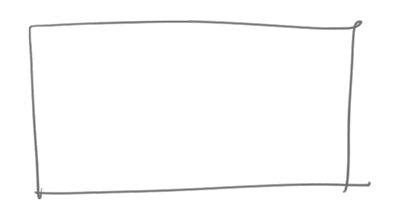
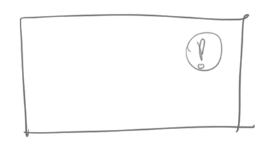
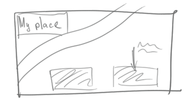
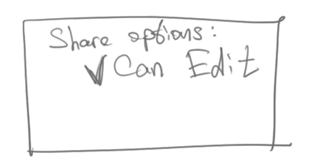
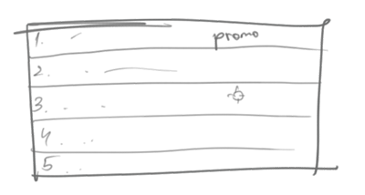

Create. Share. Communicate.
MapAround is a service for creating and sharing local maps.
Decentralised
You can create your own local plans. Or extend exsisting with your own places
Simple
It is not harder than drawing a plan on a piece of paper. Anyone can do it
Social integrated
It is not only tool for indoor navigation, it is also new way of communication, which helps you to organize your offline activities online
More about Map
1. Easy map building
This service will privide a tool for creating plans. And this process is very easy and intuitive, like drawing plans for your friend on paper. You can draw only inportyant things, which is really important and ignore everything what you don't need at all.
2. Alive
Once created map becomes field for different kinds of communication between this map users. You can change map, add new objects, create events and invite other users.
3. Scalable
You can draw plan of your room. Plan of your apartment or house. Or make a common map with your friends. It is possible to draw map of whole university or campus! Besides, you can even try to make your own map of your city. Think about it.
4. Collaborative
Many users can edit single map. When you create map, you can chare this map with other users and set up their rights for this map, all you need is allow them edit it.
5. Map search
All maps are stored in MapAround database and you can search map by its ID, keywords, geographic position, category etc.
Examples
1. Social communication
ex.1 Your place
ex.2 Campus
2. B2B projects
ex.1 Mall
ex.2 City Park
Perspectives
1. Navigation
a) Integration GPS navigation (for outdoor projects)
b) Navigation by using camera and Augented Realty markers
c) Development new ways of indoor navigation. One of the perspective ways may be navigation by analyzing of wifi sygnal
2. Automatic map creation
One wat is scanning indoor space with kinect
3. Integration with other services
a) Map services such as google.maps. MapAroud in this way may be useful addition for classic maps
Travel setvices such as TripAdvisor. You can link to any place its MapAroud map.
4. API
Give other developers possibility to integrate MapAround service in their applications
And lastly, this one. Checkmate.
Social page